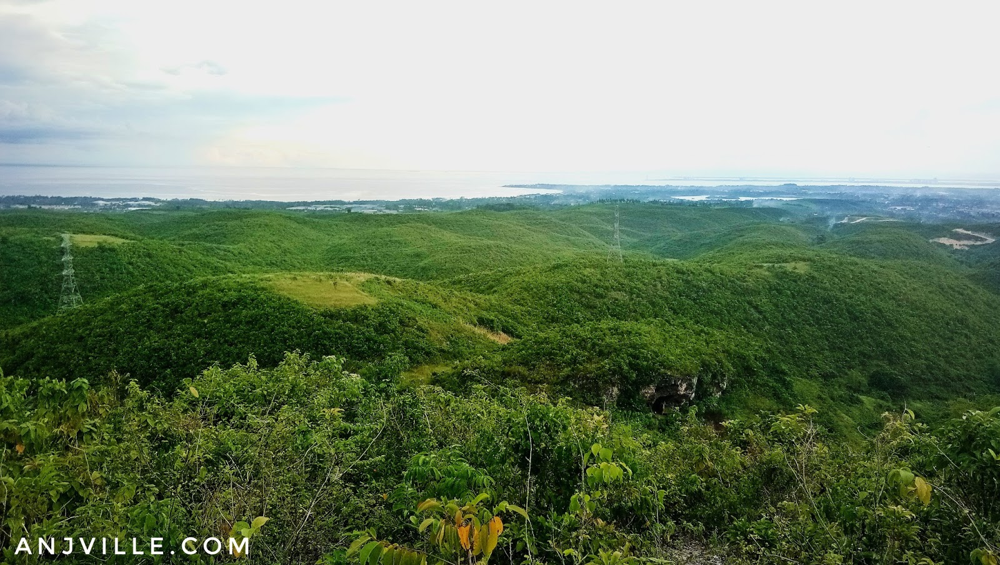

ABOUT THE PLACE
Lataban Hills in Liloan, Cebu, is a scenic destination known for its lush greenery, rolling landscapes, and serene atmosphere. This natural attraction offers a tranquil escape from the hustle and bustle of urban life, making it a favorite spot for nature enthusiasts, hikers, and bikers. The hills are ideal for outdoor activities such as trekking, picnics, and even camping, as they provide breathtaking views of the surrounding countryside. Lataban Hills is also home to the historic Lataban Manmade Cave, adding a historical touch to its natural charm.